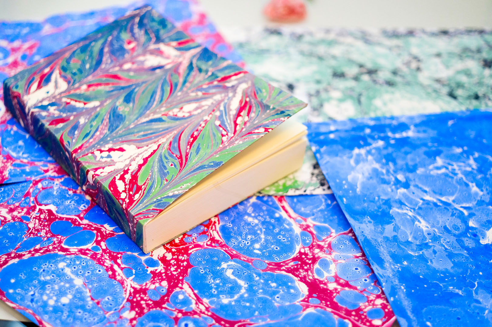
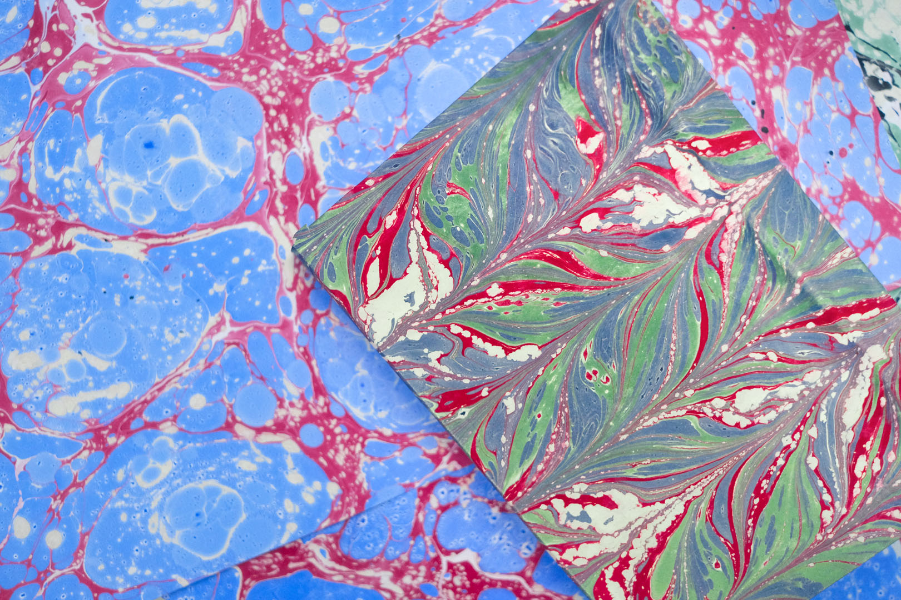
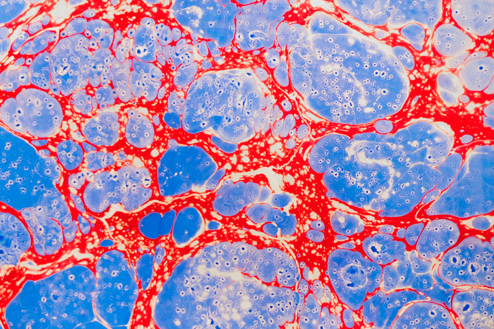
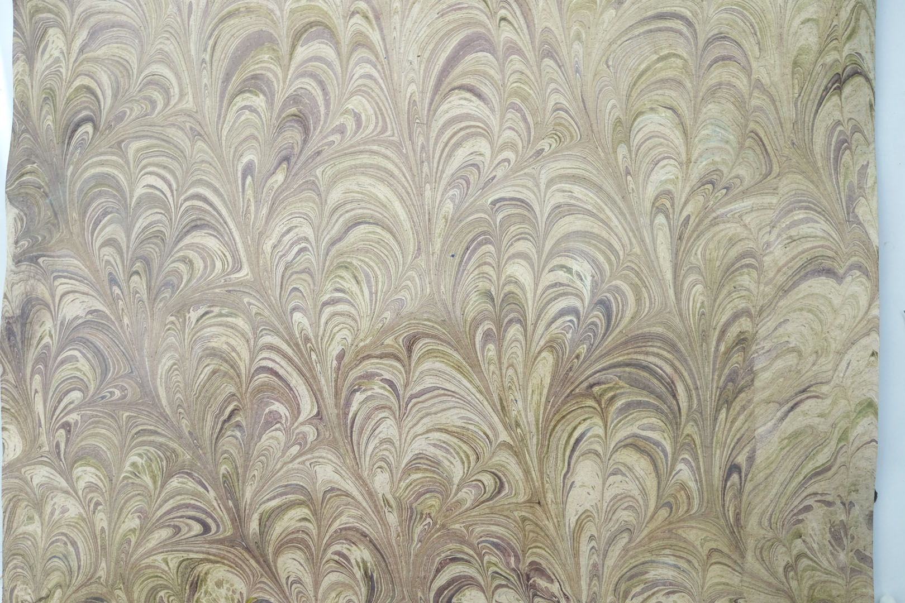

Marmurkowanie
Tak przepiękne wzory i połączenia kolorów możliwe są tylko dzięki technice ebru — tureckiej sztuce malowania na wodzie. To nie tylko technika artystyczna, ale także forma medytacji i kontemplacji poprzez obcowanie z wyjątkowością samego procesu.


Ebru to turecka tradycyjna sztuka zdobienia papieru. Polega na odpowiednim nałożeniu farb na powierzchnię wody, co pozwala uzyskać wspaniałe i unikatowe kształty o olśniewających barwach. Po zapoznaniu się z naszym wprowadzeniem nauczysz się samodzielnie malować po wodzie, puszczając wodze fantazji i oddając się radości tworzenia. Kiedy stworzysz swój niepowtarzalny wzór, pomożemy ci oprawić nim notatnik.

Poznasz klasyczne wzory — battal, gel-git, tarakli — oraz nauczysz się tworzyć kwiaty metodą lale i swobodne kompozycje ekspresyjne.
Wykonasz kilka arkuszy papieru marmurkowego w różnych, wybranych przez siebie technikach. Każdy arkusz będzie unikatowy i niepowtarzalny.
Pomożemy ci przygotować jeden z arkuszy jako okładkę twojego ręcznie oprawionego notatnika, który zabierzesz ze sobą do domu.
Ebru to sztuka, w której nie ma błędów — każdy ruch pędzla na wodzie tworzy coś pięknego. Puść wodze fantazji i oddaj się radości tworzenia.

Ręcznie oprawiony notatnik z okładką ebru, pozostałe arkusze papieru marmurkowego oraz wiedzę na temat sztuki marmurkowania.